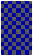
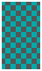
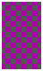
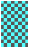

游戏总览 · 一片大洋，六段人生
《大航海時代 II》（KOEI，1993）是大航海时代系列的巅峰之作。它最具标志性的设计： 六位主角共用同一个世界——同一张海图、同一套经济、同一批人物， 剧情彼此穿插。你在若昂的故事里遇见的海盗，换一位主角开局，也许就是你自己。
游戏没有规定你「必须」做什么。你可以做穿梭于特产港之间的豪商，做为王室开疆的提督， 做令商船闻风丧胆的海盗，也可以什么都不管，只为绘出一张完整的世界海图。 名声分为冒险、贸易、海战三轨，各自积累、各自开启不同的际遇—— 这正是「自由航海」的精髓。
世界横跨欧罗巴、新大陆、非洲、中东、印度、东南亚与东亚七大文化圈， 一百零一座港口各有风貌：北欧的石砌街巷、地中海的白墙红瓦、东方的飞檐木楼。 港口的物价随贸易此起彼伏，海上的风与洋流随季节流转——这是一个活着的十六世纪。
六位主角 · 列传
选择一位主角，就是选择一种活法。六条故事线难度与玩法各异，且在同一世界中互相交错—— 全部通关之后，你才算真正读完了这个时代。

若昂
名门法雷尔家的少爷，继承探险家父亲的遗志，从里斯本启航，追寻传说中沉没的大陆。 剧情最完整、引导最充分的一线，初次航海者的不二之选。

卡塔莉娜
本是舰队军官，因恋人与弟弟之死愤而背离祖国，率舰队向西班牙复仇。 开局便有强力舰队，玩法以海战为主，火炮与接舷是她的语言。

奥特罗
奉女王密令出海的军人，以私掠许可为剑，与强敌的无敌舰队周旋于大洋。 军人路线：接受王命、击沉敌舰、换取军功与爵位。
恩斯特·洛佩斯
周游世界、立志绘出一份正确世界地图的学者，与地理学家梅尔卡特相交甚笃。 探索与测绘路线：发现的每一段海岸线，都是写进地图的一笔。
皮埃特罗·康迪
家道中落、背负巨债的乐天派，变卖家产换来一条船，要靠寻宝翻身还债。 囊中羞涩的开局与豁达的性子，造就一条笑中带泪的冒险线。

阿兰·维斯特
出身市井，凭一艘小船与微薄本钱闯荡地中海，立志成为冠绝东西的大豪商。 纯正的贸易路线：低买高卖、开辟商路、以金币丈量世界。
港口设施 · 上岸指南
每座港口最多有十二类设施，认招牌就能找到门：纹章盾是行会、金器是银行、柱状卷轴是道具屋。 走到门口正面推门即可进入。
| 设施 | 招牌 | 菜单项 | 能做什么 | 类别 |
|---|---|---|---|---|
| 交易所 | 天平秤 | buy_goodssell_goodsinvest_marketshow_prices | 买卖贸易品。每港物价不同，特产便宜、舶来品昂贵——低买高卖正是发家之本。 | 贸易 |
| 酒馆 | 酒杯 | hire_sailordismiss_sailordrink_talkchat_navigatorbar_girlgamble | 雇佣水手、招募航海士伙伴、向老板和客人打探传闻情报；也是剧情邂逅的高发地。 | 人脉 |
| 造船所 | 船锚 | build_shipbuy_used_shiprepair_shipsell_shiprefit_shipinvest_industry | 购买新船、出售旧船、改造船只（炮门、船仓、船首像），打造你的旗舰与船队。 | 船务 |
| 港务局 | 旗帜 | set_sailresupplydry_dock | 办理出入港手续、补给查询等港口公务；远航前别忘了来一趟。 | 船务 |
| 旅馆 | 床铺 | chat_navigatorport_supportsleep | 休息恢复体力、留宿过夜；不少剧情人物也会在此等你。 | 休整 |
| 王宫 | 王冠 | audience_kingapply_nationalityrequest_fundsrequest_shipsecret_meeting | 谒见国王或公爵，领受敕命任务，凭功勋获赐爵位与封赏——出人头地之路。 | 功名 |
| 行会 | 纹章盾 | job_listingnation_info | 承接委托工作：护航、讨伐、运送……完成可得报酬与名声，缺钱时的可靠营生。 | 功名 |
| 武器屋 | 刀剑 | store_equipmentequipexchange_equipment | 购置剑与铠甲。决斗时的胜负，一半在剑术，一半在你腰间的装备。 | 武备 |
| 银行 | 金器 | depositwithdrawloanrepay | 存款、提款。金币随船沉没就血本无归——大宗财产务必存进银行。 | 贸易 |
| 道具屋 | 柱状卷轴 | buy_itemsell_item | 买进、卖出各类道具：望远镜、海图、奇珍异宝……冒险路上的百宝箱。 | 补给 |
| 教会 | 十字架 | worshipdonate | 祈祷与捐献，安抚船员之心；某些誓约与剧情也在神前完成。 | 休整 |
| 占卜师 | 水晶帐幕 | fortunefortunefortunefortune | 占卜吉凶，获得下一步剧情与宝藏所在的暗示——迷航时来此问路。 | 情报 |
本表由 tools/gen_wiki.py 自动生成：设施/顺序取自 facilities.json，菜单项取自 facility_actions.json（与原版 MENU.DAT 解码逐项对齐，test_facility_actions.py 钉死），招牌/导读/类别取自 facilities_prose.json。
店主台词 · 进门寒暄与各项应答
据 docs/wiki_data/facility_dialogue.json（设施→MESSAGE.DAT 索引，仓库内仅存编号、不存台词） 渲染你本地 message.json 的解码台词。$n/$s/$r/$d、%s/%d 为原版变量占位； 台词按内容+菜单推定归属，置信度见各设施徽记，待 DOSBox 实机逐条复核。
航海要诀 · 风、海流与补给
帆船不是想去哪就去哪的。读懂风与洋流，备足水粮，才配得上「航海家」三个字。
风与海流
每片海域都有随季节变化的风向与洋流：顺风顺流一日千里，顶风逆流寸步难行。 跨洋远航前先想想季风——比如借冬季的东北信风下西洋，乘夏季的西南季风去印度， 是真实历史上香料商人的走法，在这里同样奏效。
补给与船员
出港前在港口备齐水、粮食与木材（修船用料）。水粮按船员人数消耗， 长途断水断粮会让船员士气崩溃、疾病蔓延，甚至酿成叛变。沿岸航行多停港， 跨洋之前算好天数——这是每位船长的必修课。
七大文化圈
| 文化圈 | 风土印象 |
|---|---|
| 北欧 | 石砌的灰色街巷，毛织品与琥珀的故乡。 |
| 地中海 | 白墙红瓦，艺术品与玻璃器的集散地，诸主角的起点。 |
| 新大陆 | 大洋彼岸的未知海岸，贵金属的传说与殖民地的机遇。 |
| 非洲 | 漫长的西岸航线，象牙与黄金海岸。 |
| 中东 | 清真寺的穹顶之下，地毯与香水的巴扎。 |
| 印度·东南亚 | 胡椒、肉桂、丁香——令全欧洲疯狂的香料群岛。 |
| 东亚 | 飞檐木楼的港町，丝绸、瓷器与茶叶的故乡，航路的东端。 |
玩法系统 · 商、战、剑
跑商与物价
每港有特产与紧俏货，物价随买卖浮动：大量抛售会砸价，扫货会抬价。 发现一条「便宜买进 → 高价卖出」的航线，就守住它，直到市场教你换一条。
舰队对决
海上遭遇敌对舰队即进入回合制海战：抢占风向、炮击削帆、接舷夺船。 击破敌方旗舰可令全军溃散；俘获的船只能编入己方舰队或卖钱。
船长单挑
接舷战与剧情冲突常以两位船长的剑术决斗收场。出招分攻防与虚实， 武器屋的好剑好甲能实打实地救命——别让你的船长赤手空拳。
海图与发现
未踏足的海域在海图上是一片空白。亲手把它航成实线，寻访传闻中的秘宝与奇观， 冒险名声随之而来——有些故事，只讲给走得最远的人听。
爵位与敕命
名声足够时谒见君主，可领受敕命任务；完成则积累功勋、晋升爵位。 头衔不只是虚名——它改变诸国对你的态度，也解开新的剧情。
航海士与船队
一个人开不动一支舰队。在酒馆招募航海士，任命他们做各船船长、会计、瞭望…… 人尽其才，舰队才能远行。有的伙伴，只与特定的主角有缘。
新手锦囊 · 启航五诫
随身金币会随海难与劫掠一起沉没。回港先存钱，再谈别的。
按航程天数备双份。断粮的代价是士气、疾病与叛变。
传闻就是路标：剧情下一步、特产行情、宝藏线索，多半从酒杯边来。
出海前看季节。绕一点的顺风路，常常快过笔直的顶风路。
剧情卡住、不知该去哪座港？水晶球里有下一站的暗示。